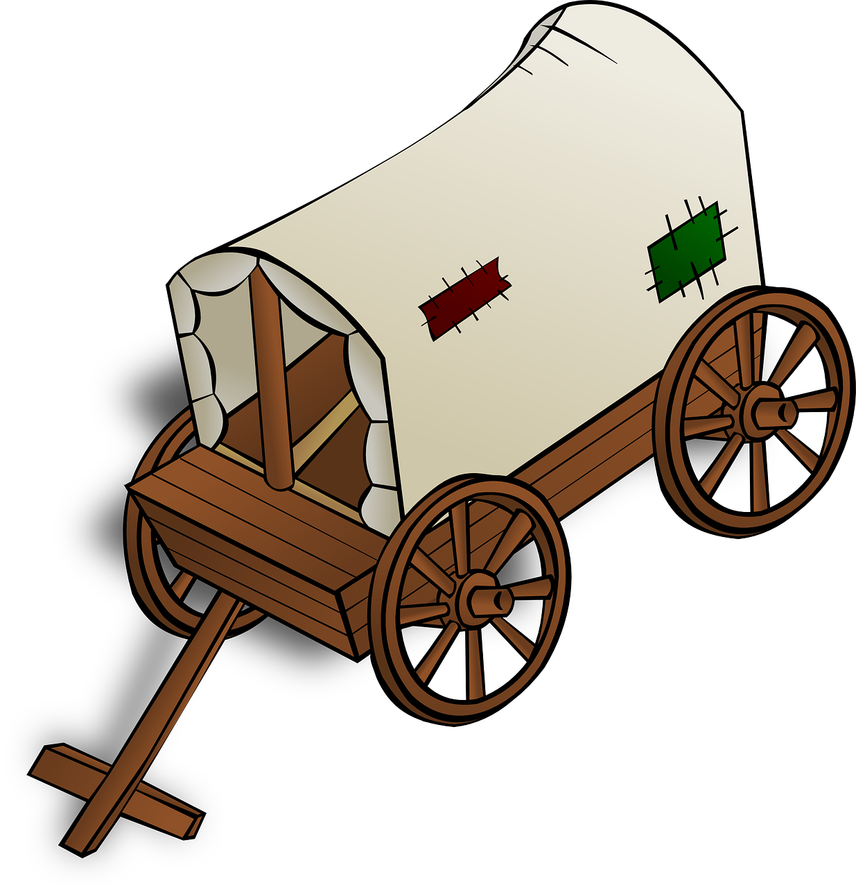

Compared to many of the games I have covered, Oregon Trail is one of the oldest, showing that learning in games is not only a recent development. This classic started as a text adventure for very early pcs but has received many updates over the years to make it more visually appealing and engaging for a modern audience. But, how did this game serve as a learning tool? In the 1800s, a phenomenon known as Westward Migration took place where American settlers started from the eastern-side of the country and made an arduous journey west.
A wagon. Used for transporting people and products before the invention of the automobile.
Many of the obstacles families faced at the time during their travels are reflected in the gameplay of the Oregon Trail. Many diseases were fatal, snake bites couldn't be treated as there were no doctors or hospitals along the expanse between the settlers starting point and their destination, improperly managed food and water could lead to starvation or dehydration. It really immerses the player in what it was like to be an early American traveler, which serves as an intuitive learning experience.